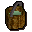
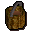

Hangover cure

| Config name | hangover_cure |
| Item id | 1504 |
| Value | 2 gp |
| Weight | 2200g |
| Members | Yes |
| Tradeable | No |
| Stackable | No |
| Defined in | scripts/quests/quest_elena/configs/hangover_cure.obj |
Hangover cure
It doesn't look very tasty.
How to make
| Skill | Level | XP | Ingredients | Tool | How | Where | Makes |
|---|---|---|---|---|---|---|---|
| Cooking | 1 |  Chocolaty milk, | use on item | 1 |
Quests
Referenced in scripts
scripts/quests/quest_elena/scripts/bravek.rs2scripts/skill_cooking/scripts/cooking_inv/scripts/cakes/cakes.rs2